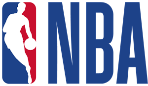
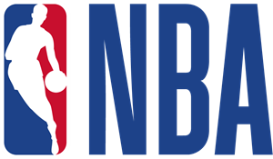

O Chicago Bulls foi criado em 1966. Nos primeiros anos, houve dificuldade de atrair a atenção do público para ir até a arena. No início da década de 70, sob o comando de Dick Motta, os Bulls começaram a ter boas campanhas. A equipe de Chicago teve quatro temporadas seguidas com mais de 50 vitórias e conseguiu ir até as finais de Conferência.
Em 1976, os Bulls conseguiram Artis Gilmore, por meio do draft de dispersão da ABA. O pivô foi um dos primeiros grandes nomes da franquia e fez uma boa dupla com Reggie Theus. Os dois, no entanto, tiveram poucas boas campanhas. Gilmore saiu em 1982 e, nas duas temporadas seguintes, os Bulls tankaram (campanhas ruins que geram boas escolhas de Draft). Porém, isso deu muito certo.
No NBA Draft de 1984, os Bulls tiveram o direito de ter a terceira escolha. Hakeem Olajuwon e Sam Bowie foram as duas primeiras seleções. Para os Bulls, sobrou simplesmente Michael Jordan. A equipe selecionou ele e, desde o início, já viu que tinha uma joia rara. Em todos os anos de Chicago, MJ conseguiu ir aos playoffs. Ele ajudou a equipe a construir uma cultura vencedora.
No entanto, o primeiro título dos Bulls só veio após a equipe trazer Scottie Pippen, por meio de uma troca na noite do draft. Conforme Pippen crescia, os Bulls também melhoravam. Até que, em 1991, o primeiro anel veio. Nos dois anos seguintes, mais dois títulos e o primeiro tricampeonato.
++ Fique por dentro de tudo sobre NBA!
Em 1993, Jordan decidiu se aposentar. Com apenas 29 anos, o ala-armador já não estava mais motivado como antes. Ele acabou voltando para a equipe no fim da temporada 1994-95. Para a temporada seguinte, Dennis Rodman foi trazido e formou um supertrio com Jordan e Pippen. Eles acabaram ganhando mais três títulos com os Bulls, até que MJ se aposentou novamente em 1998. Pippen acabou sendo trocado e Rodman foi para os Lakers. Era o fim de uma era.
Os Bulls então acabaram ficando seis anos seguidos sem ir aos playoffs. Voltaram apenas na temporada 2004-05. A equipe montou um elenco com Tyson Chandler, Ben Gordon, Luol Deng e Kirk Hinrich, todos vindo via Draft. O time foi então aos playoffs por três anos seguidos, mas sem grandes participações.
Na temporada 2007-08, os Bulls conseguiram a primeira escolha do draft, mesmo tendo apenas 1,7% de chances na loteria. Eles escolheram Derrick Rose, armador vindo de Memphis. Ele foi o principal nome da equipe nos anos seguintes e, junto com o técnico Tom Thibodeau, conseguiu levar os Bulls para as finais do Leste.
Rose infelizmente acabou sofrendo muito com lesões. Ficou mais alguns anos na equipe e, junto com Jimmy Butler, os Bulls conseguiram ter boas campanhas. Entre a temporada 2016-17 e a 2020-21, a equipe de Chicago não foi aos playoffs. Na offseason de 2021, a franquia contratou Lonzo Ball e DeMar DeRozan. Os dois se juntaram à Zach LaVine e Nikola Vucevic, formando um time muito forte, que pode brigar pelo título da NBA novamente.
O Chicago Bulls é um time de basquete profissional americano sediado em Chicago, Illinois. Os Bulls competem na National Basketball Association (NBA) como um membro da Divisão Central da Conferência Leste da liga. A equipe foi fundada em 16 de janeiro de 1966 e jogou seu primeiro jogo durante a temporada de 1966-67. Os Bulls jogam seus jogos em casa no United Center, uma arena compartilhada com o Chicago Blackhawks da NHL.
Os Bulls tiveram sucesso durante os anos 90, quando foram responsáveis por popularizar a NBA em todo o mundo.
Patrick Williams volta a reforçar Bulls após cinco meses
Após cinco meses, Patrick Williams está finalmente de volta ao Chicago Bulls. O jovem jogador recuperou-se de cirurgia no punho esquerdo e, assim, reestreou na temporada durante a vitória contra o Toronto Raptors. Ele saiu do banco de reservas para anotar sete pontos em 19 minutos de ação. O ala nunca havia passado tanto tempo afastado das quadras e, por isso, ficou emocionado com o aguardado retorno.


 
